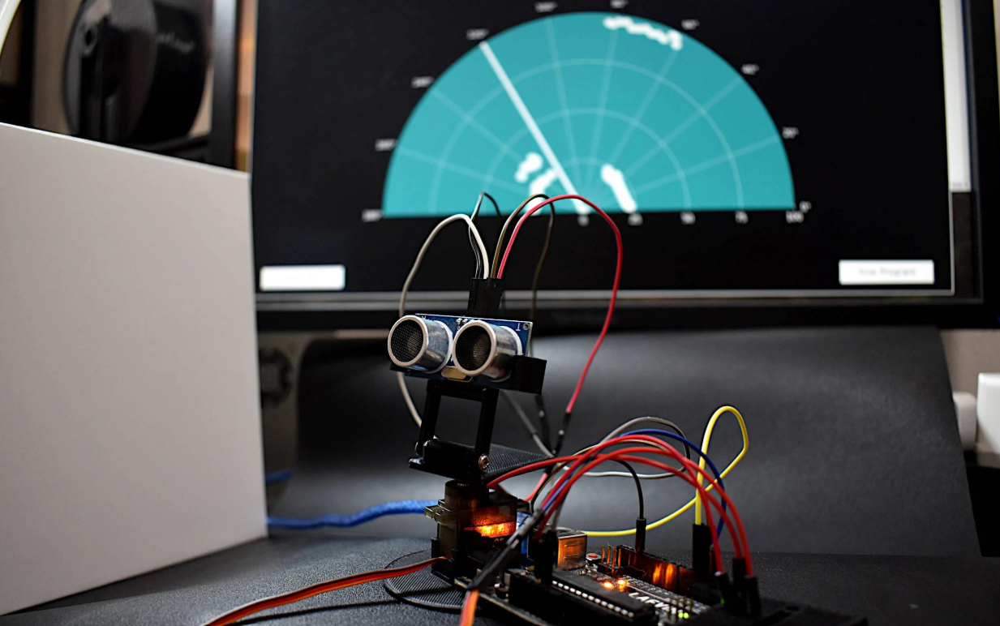
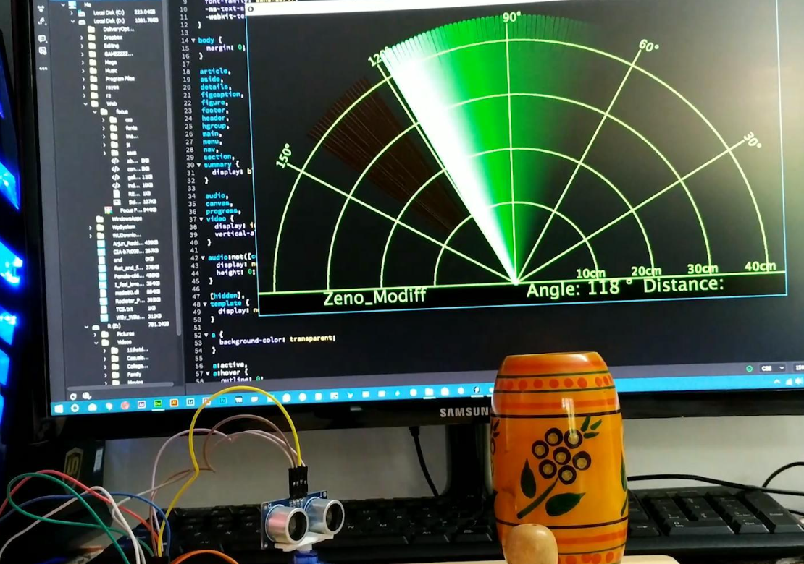
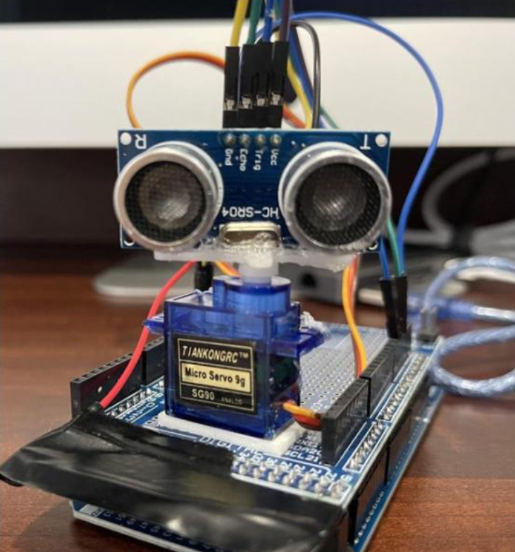
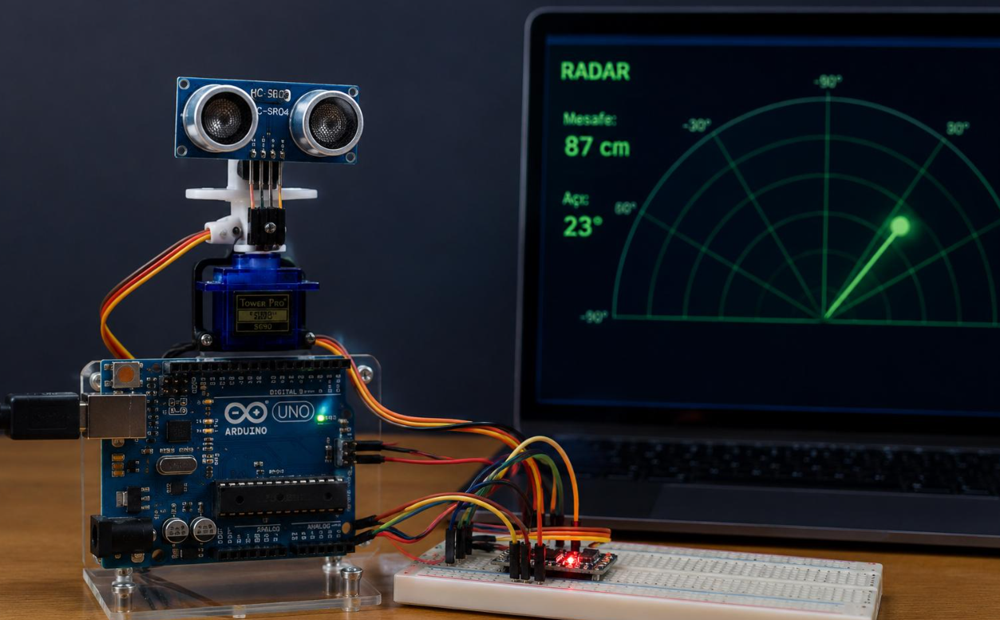

Automatic Scanning
The SG90 servo automatically rotates the ultrasonic sensor between 0 and 180 degrees.
VJAYA ROBOTICS PROJECT
ARDUINO ROBOTICS PROJECTBuild an ultrasonic radar system using an Arduino UNO, HC-SR04 ultrasonic sensor and SG90 servo motor. The rotating sensor scans its surroundings from 0 to 180 degrees and measures the distance of nearby objects.
Explore ProjectPROJECT OVERVIEW
This Ultrasonic Radar System uses an Arduino UNO as its main controller. An HC-SR04 ultrasonic sensor is mounted on an SG90 servo motor to scan the surrounding area.
The servo rotates the ultrasonic sensor from 0 to 180 degrees. At each angle, the HC-SR04 sends ultrasonic waves and measures the time taken for the reflected waves to return.
The Arduino calculates the distance and sends the scanning angle and distance readings to the Serial Monitor. The servo then continues scanning in the opposite direction.




WHAT IT CAN DO
The SG90 servo automatically rotates the ultrasonic sensor between 0 and 180 degrees.
Detect nearby objects using ultrasonic sound waves.
Calculate the distance between the sensor and an object in centimetres.
Identify the servo angle at which an object is detected.
Scan forward and backward continuously to monitor the surrounding area.
Display real-time angle and distance readings through Arduino Serial Monitor.
HARDWARE REQUIREMENTS
SOFTWARE REQUIREMENTS
The Arduino program is organized into separate files for the main sketch, configuration, servo control and ultrasonic distance measurement.
HOW IT WORKS
HARDWARE CONNECTIONS
| Component | Component Pin | Arduino Connection |
|---|---|---|
| SG90 Servo | Signal | D6 |
| SG90 Servo | VCC | External regulated 5V |
| SG90 Servo | GND | Common GND |
| HC-SR04 | VCC | 5V |
| HC-SR04 | GND | GND |
| HC-SR04 | TRIG | D9 |
| HC-SR04 | ECHO | D10 |
RADAR SCANNING
| Servo Angle | Sensor Operation |
|---|---|
| 0° | Measure distance at starting position |
| 30° | Measure distance at 30 degrees |
| 60° | Measure distance at 60 degrees |
| 90° | Measure distance at centre position |
| 120° | Measure distance at 120 degrees |
| 150° | Measure distance at 150 degrees |
| 180° | Measure distance at final position |
The actual program scans in 2-degree increments. The angles in this table are examples to explain the scanning process.
DISTANCE MEASUREMENT
The HC-SR04 measures the time taken by an ultrasonic wave to travel to an object and return to the sensor. Arduino uses this time to calculate the distance.
Distance = (Echo Duration × 0.0343) / 2
The calculated distance is displayed in centimetres (cm).
PROGRAM STRUCTURE
Main sketch and radar scanning operation.
Pin assignments, scanning angles and timing settings.
Servo motor function declarations.
Servo initialization and movement functions.
Ultrasonic sensor function declarations.
Ultrasonic pulse generation and distance calculation.
PROGRAMMING
Download the original Ultrasonic Radar System files.
ULTRASONIC_RADAR.ino
Download Code ↓ 📄config.h
Download Code ↓ 📄servo_control.h
Download Code ↓ 📄servo_control.cpp
Download Code ↓ 📄ultrasonic.h
Download Code ↓ 📄ultrasonic.cpp
Download Code ↓PROJECT DEMONSTRATION
Ultrasonic Radar System Demonstration
Add your actual radar photograph or demonstration video here.IMPORTANT INFORMATION